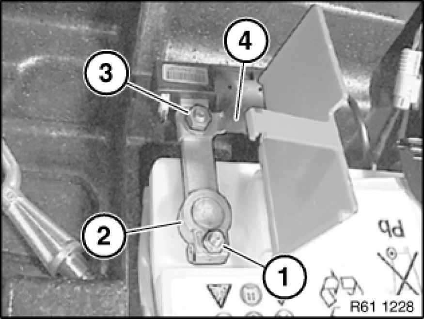

Positive: Service and Repair
61 12 004 - Replacing battery positive lead (from battery to engine compartment partition connector)

Warning!
Observe safety instructions Service Precautions for handling vehicle battery.

Necessary preliminary tasks:
- Remove right luggage compartment wheel arch trim
- Remove instrument panel trim 51 45 030 Removing and Installing Instrument Panel Trim
- Remove right front seat
- Remove central bass cover Removing and Installing/Replacing Left or Right Central Bass Speaker (Under Front Seat)
- Remove panel for door pillar on right Removing and Installing/Replacing Trim for Left or Right Door Pillar (Bottom)

Unfasten plug connection (2) and disconnect.
Disconnect battery negative lead (1) Disconnecting and Connecting Battery Negative Lead.
Open positive terminal cover (3).

Release nut (3), tightening torque 61 12 1AZ [1][2]Battery Cable.
Disconnect lead (4).
Release nut (1) of safety battery terminal (2), tightening torque 61 21 1AZ [1][2]Mechanical Specifications.
Important!
Do not under any circumstances pull/lever safety battery terminal (2) off by force.
Detach safety battery terminal (2) towards top, lay to one side and secure.
Lever out covers (1) and remove.
Unfasten screws (2).
Lift out rail (3).

Important!
Do not kink floor panelling under any circumstances!
Cut and fold back floor panelling (1) in area (2).
Installation Note:
Cut into floor panelling (2) at marked points. Join cutting lines with cable straps (short).
Unlock cable lug mounting (1) and fold back.
Release screw (2), tightening torque 61 12 2AZ [1][2]Battery Cable.
Unclip cable lug mounting (1) from positive battery cable (3) and remove.
Warning!
Risk of short circuits!
When installing, ensure:
- Correct seating of cable lug mounting (1) on positive battery cable (3)
- Correct screw connection

Note:
For purposes of clarity, the following illustrations show the front/rear floor panelling removed.
Raise front/rear floor panelling in area of battery positive lead.
Remove front insert (1).
Remove battery positive lead (1) from cable guides (2).
Detach battery positive lead (1) from cable guides (2) and remove.